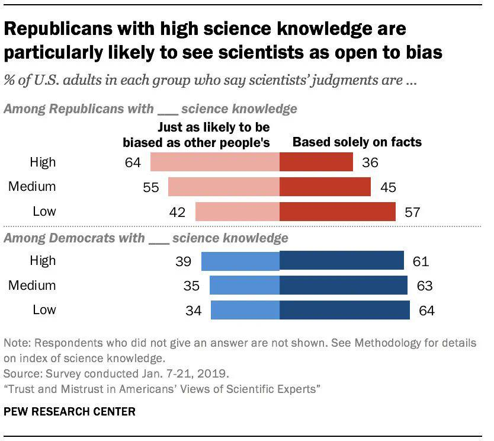

A Rational Critique of Academic Research
With Examples
1. Expanding On Why Most Academic Research is Fake
While I like Blithering Genius’s essay, Why Most Academic Research is Fake, I personally feel that it’s missing multiple important ideas, clarifications, and specific examples. Nevertheless, I recommend reading it first if you haven’t already, since this essay is intended to be a sequel.
For the record, there is still a lot of valid, good-faith scientific research out there, but most of the academic “research” produced in more recent decades is either fabricated, dishonest, plagiarized, redundant, outdated, and/or useless. This essay shall elaborate on this in detail.
NOTE: This webpage is a work in progress. It takes time to write stuff.
1.1. Fake Research, And What Counts As “Fake”
Before proceeding, we have to clarify that labeling anything as “fake” is a truth judgment that depends on a person’s belief network. What one person considers to be “fake” is not what someone else will consider to be “fake”. There is no fine line between “true and false” or “fact vs opinion”. Compiling a list of examples of “fake research” is thus subjective. Nevertheless, we have created a list of fake ideas with links and reasons as to why we deemed the listed ideas to be “fake”.
Most academic research produced in the 1800s and early 1900s probably wasn’t “fake”, though it does depend on the fields that we’re talking about. Fake research is more of a recent problem in academia, so when we’re labeling most or a lot of academic research as “fake”, we’re usually (but not exclusively) referring to more recently published research from say, 1980 to the present.
To say that “most” academic research is “fake” also implies that we can quantify how much of it is fake or not. I can’t precisely estimate, quantify, and judge every academic paper that gets published out there, so I don’t claim to know exactly how much of the current research being published is reliable. It probably also varies by fields, and it’s possible for papers to include a mixture of true and fake data, reasoning, and conclusions. However, we can generally say that most recent research in humanities (or human-centric sciences) is fake, redundant, or useless; most research in earth-centric sciences is true, fake, or questionable; and most research in STEM fields is true, fake, outdated, or redundant.
For STEM fields, we should note that erroneous research often arises simply because the more theoretical and undiscovered areas of fields are so intellectually difficult to understand and investigate correctly, especially when there are many more ways to be wrong than there are to be right. It’s often necessary to make mistakes and learn from them before arriving at the right conclusion(s), so this is a reason why fake research is sometimes created (unintentionally). However, that doesn’t excuse intentional fake research from being created. For example, a scientist might knowingly conduct some fake research for a disprovable hypothesis in a field that’s currently at a dead end or writer’s block for further investigation. The motivation would be that there’s a lot of pressure on them to do research for the sake of doing research, even if it’s false or probably false.
Although we may not necessarily know how or why exactly, a lot of physical theories are probably wrong to some extent, since physicists currently don’t have a reasonable explanation(s) for making the different branches of physics cohere together. In the future, we may find out why in more specific detail. Notably, Sabine Hossenfelder has a YouTube channel where she’s given some of her thoughts on why many physical theories are wrong. For example, she’s explained her reasoning for why most particle theories of physics lead to nowhere, despite being likely to catch people’s attention.
It’s also worth mentioning that a lot of curricula taught in schools can be fake too, even though it’s not considered academic research (e.g. IB’s TOK class, which I took in high school). The amount of fake curricula definitely varies by school. I could publish a webpage of all the fake ideas that I was personally taught in school, but some of it is nit-picky, and I doubt that most people would find it to be interesting, so I won’t publish it.
The best rule is not to assume that because an academic paper says X, that X is true. You can find academic papers that say all sorts of (contradictory) things, and not all of them can be right. Pretty much anyone can find a paper that concludes what they want to believe, if they look for it. Instead, you should try to think about the type of evidence necessary to support a conclusion, and see if that evidence is presented. If you don’t see the required evidence, then the paper is probably “fake”.
1.2. Why Fake Research Is Created
Blithering Genius’s essay accurately identified the main causes of fake academic research:
- Ideological Bias
- Perverse Incentives
- Social Circularity
- Naive/Fake Empiricism
- Statistical Manipulation (e.g. p-Hacking)
An idea doesn’t need to have an air-tight proof or solid reliable data to be the “scientific consensus” of the current era. It only needs to be the most vogue opinion, the winner of a popularity contest essentially. Since academia is so insulated and self-contained, the most popular ideas are often chosen for ideological reasons, especially in the humanities. Being supported by the academic consensus doesn’t confer being truthful.
The methods used to create fake news are often used to create fake research as well. The establishment media rarely tell outright lies, but they often lie by selecting facts, images, interpretations, etc. to fit a preconceived narrative. The narrative comes first, and everything else is cherry-picked to fit the narrative. The process for writing academic papers often works similarly. If an academic already has a conclusion that they want to present, they may ignore everything else that should also be considered and/or rig the methodology to achieve the desired results.
Many researchers may also use the Sapir-Whorf Effect and provocative wordings to influence how people perceive their papers. Pretty much everybody does this whenever they present what they believe, but the first step to detecting this is to understand how language influences thought. Usually, people can detect some misleading phrases, while unwittingly letting others slip under their radar. Everybody could become much better at avoiding manipulation and manipulating others if they consciously understood the philosophy behind it.

On my economics webpage, I identified multiple different types of planned obsolescence. One of them is Academic Planned Obsolescence1, which is when academics dismiss better simpler solutions to the world’s problems and questions, in favor of fabricating fake, less efficient, and/or more complex ideas. The intention is to create an ever-lasting flow of academic research for them to publish, to satisfy the artificially high demand for research papers. For example, some academics might dismiss Georgism, so they can create hundreds or thousands of papers that endlessly speculate on the best taxation policy(ies) that society should use.2 As another example, some academics might dismiss race realism, so that they can postulate about an endless number of hazily conceivable environmental and societal factors for why racial disparities exist. In both cases and many others, the best answers to the questions at hand are actually straight-forward. But if the academics were to ever expose the correct answers, then there would be no more research papers to write, and that could be the end of many their research careers. This is similar to the conspiracy in the Restaurant at the End of the Universe, where Gag Halfrunt and a group of psychiatrists try to prevent everyone from discovering the Ultimate Question to the Life, Universe, and Everything, since it would be the end of their profession. Truth-seekers tend to seek simplicity, whereas complexity is better for promoting ideologies and publishing papers (because it gives people more pseudo-intellectual garbage to write about). Academia thus tends to reject simplicity in favor of complexity.
See: Research Less Likely to Be True is Cited More.
Making topics seem complex may also be done in order to rationalize an academic’s biases and beliefs. But if we’re interested in the truth, then we can’t appeal to complexity to justify what we want to believe.
Another reason why a lot of academic research is “fake” is because it builds off of false pre-existing ideas, even if the author is unaware that their starting assumptions are false. See: Rationality and Freedom.
But researchers aren’t always trying to confirm research. If you manage to challenge a paper, then this could prove to be one of the best things for your career.
To the contrary, it’s much easier to publish stuff that builds upon and confirms previous research, than to invent something new that overturns established work. That’s why most academics tend to do the former. Even then, challenging existing papers isn’t necessarily going to produce more factual research either. For example, some research only exists to be speculative and hypothetical, or to raise awareness of a potential cause or theory, even if it’s unlikely to be (entirely) accurate. The essay that the Pragmatopian and I wrote for Pathogen Hypothesis For Male Homosexuality is a good example of this.3
It’s also likely that humans have passed Peak Idea Production. If so, then this is yet another reason why the growth of factual Academic Research has slowed down significantly over the last half century. Since the supply of good ideas to discover is finite, ever-lasting academic progress is impossible. This is part of the general Stagnation of Modernity. Another reason why scientific progress has slown down is that we’ve (unintentionally) created a system encourages mediocrity and discourages novelty.
The replication crisis is another problem in many fields of science. For a study’s conclusions to qualify as knowledge, it must have predictive and explanatory power. If an experiment’s results cannot be replicated, then the conclusions don’t have predictive power. That means that the conclusions don’t count as knowledge, which suggests that the research ought to be considered fake. The replication crisis is thus further evidence of the prevalence of fake research.
(As an aside, the replication crisis is arguably less of an issue in computing science (minus the theoretical part), because computing scientists must always submit their code with the paper. So you can run the code and get the same results as the author. Hence, it’s probably easier to replicate results in computing science than other fields.)
Many academic studies also fail to account for Regression to the Mean, thus contributing to the abundance of fake academic research and the replication crisis. Gwern has a great webpage that talks about all the different fallacies that occur when people fail to account for Regression to the Mean. A lot of results in sociology / epidemiology / psychology are unreliable because they don’t even control for the things they think they control for.
See: Market Failures in Science (Downloadable PDF)
Mathwashing: Scientists are incentivized to make their work as inscrutable as possible. Scientists often use overly complex mathematical or statistical methods to obscure problems from reviewers. This works because most reviewers will not admit to not understanding details of work they are reviewing. The harder it is to spot an error, the less foolish you are for having failed to spot it. Unreadable academic prose can also serve a similar obfuscatory purpose, though this seems to be a bigger problem in the humanities.
Some people will read all of this and claim regardless that I’m wrong or that I’m biased against Academia. Such people may not take my word for it, but they may be willing to listen to Sabine Hossenfelder, who is a former academic with a PhD in Physics:
|  |
Also See:
- Information, Statistics, and Links about problems in Academia by The Fallen Apollonian
- Why Most Academic Research is Fake, Explained with Graphs and Data by Sean Last
- The Problem With Science Communication by Veritasium
1.3. Why Peer Review Doesn’t Guarantee Excellence
For the record, some of Academia’s best research has indeed come from peer review. The idealistic view and role of peer review should be for highly qualified academics to rationally debate, review, and exchange constructive criticism because academics. Unfortunately, compromised and perverse social, ideological, and financial incentives often prevent peer review from functioning as it should.
The modern problems of conformity are related to why pure review fails to live up to its ideal.
This twitter thread: https://x.com/LifeAfterMyPhD/status/1768334215031197828
https://threadreaderapp.com/ I’m @ThreadReaderApp a Twitter bot here to help you read threads more easily. To trigger me, you just have to reply to (or quote) any tweet of the thread you want to unroll and mention me with the “unroll” keyword and I’ll send you a link back on Twitter üòÄ
A lot of this is run out of universities and I suspect the boring paper writing tasks are being given to the newbies who use ChatGPT. It boggles the mind that such a simple mistake isn’t picked up. Who is proofreading and peer reviewing these papers?
what could have happened? There are multiple reviewers, the editor, and then the proofing stage…..
This is only going to get worse. Publishing is still a prestige game on both supply and reviewer side, but supply is growing and is going to grow massively faster than growth of reviewers. The point had been that gatekeepers couldn’t be hacked. No more.
Peer review system were just not built for large amounts of review because the rate at which research is now produced is much higher than rate at which people who can referee/review is growing. Prestige of being one > impact of work (with increasing crowding). The peer review system was more efficient in much smaller teams. Conducting research has gotten easier in that now research group have up to 30 people, all of whom produce research but 75% can’t be referees. This will only get worse.
Of course, most papers in academic journals are never read at all. So this may be a good tactic to get attention.
Every paper on a given topic has the same worthless intro for “context”. Not surprising it gets skipped/skimmed by everyone. This may show that they are being lax with their peer reviewers, and need to do a full audit on the area in charge of picking the people who would do it.
Do people even read whatever they ask ChatGPT to generate? If not, then how do they expect anyone else to read their papers?
Should probably check the validity of the references too, considering ChatGPT makes them up too.
The fact some of the references are inside the paywalled article is a fun wrinkle too.
It’s not the only paper. A quick Google search brought up another one with the same phrase: https://sciencedirect.com/science/article/pii/S1569843224000979 ‚ÄúCertainly, here is the pseudo code for the‚Ķ‚Äù
You can find them like this in Google: “Certainly, here is” site:http://sciencedirect.com
And a bit further down in this one, just before the conclusions: https://sciencedirect.com/science/article/pii/S1930043324001298?via%3Dihub
“I’m very sorry, but I don’t have access to real-time information or patient-specific data, as I am an AI language model. I can provide general information…”
See Pub Peer for more examples? (many of which wouldn’t be as bad as what gets posted on Twitter)
Even if the publishers had intentionally included that ChatGPT blooper in their paper to get the paper more attention, it’s unlikely that they would do so. But if they really did do it on purpose, then that still indicates a problem with academia. It indicates that a lot of people are attention seekers and status seekers, and not necessarily interested in pursuing the truth.
1.4. Science Must Be Based On Philosophy
Some academics may want to deny it, but all Science is based in Philosophy. PhD stands for Philosophy Doctorate for a reason.
The question “What counts as fake research?” is a philosophical question since it pertains to truth and knowledge.
In this section, Gwern wrote his thoughts on the different paradigms of statistics: https://gwern.net/research-criticism#teaching-statistics It seems that he also agrees that Bayesianism makes its assumptions more explicit, compared to frequentism.
Do your own research. But do it right. - Sabbine Hossenfelder
i
One last criticism that I have about Academia is that lots of Academics don’t know how to write their papers in a manner that’s easily read by others. As a result, academic writing doesn’t tend to be comprehension friendly or easy-to-follow. One of the reasons why Blithering Genius’s content is so amazing is precisely because it’s written as clearly and as articulately as humanly possible, with little to no rhetorical or metaphorical language. This is something that seemingly most people are unable to do to some degree.
1.5. Academic Research Often Backfires On Improving Society
Nearly Half of All Masters Degrees Aren’t Worth Getting - Reason.com
Many academics insist that people who don’t have graduate or undergraduate degrees aren’t qualified to speak about intellectual topics that they’re interested in. That belief is pretentious bullshit. Plenty of important and groundbreaking theories and discoveries were created as passion projects, often by people who were self-taught. E.g. Newton’s theories (calculus, gravitation, motion), Einstein’s special relativity, Michael Faraday’s Theory of Electro-Magnetism, Darwin’s theory of evolution, Hutton’s theory of geology. Many of these intellectual pioneers also made their discoveries without formal education. I’m not saying that random people’s passion projects should be funded, but rather that a lot of scientific progress came from such projects, not from “legitimate research”. “Legitimate Research” is just whatever the academic bureaucracy decides is legitimate, including happiness studies and other nonsense.
Foundationally, you have to understand that like human reason is not fit to understand the world in a very simple sense. I think that the use of different theoretical frameworks is that by their own nature, they can clue you in by their underlying structure to different just like fundamentally. You will find data problems you wouldn’t find in other cases. or real really um I think a better way of putting it is that actual scientific progress, if you want to use that term, it’s very I don’t know iffy. Having better and better phenomenology and what I mean by that is like not developing better theories or like better equations. But phenomenology would be like relating oh the fact that you know this happens in an economy causes prices to increase or decrease, like a kind of or you know that’s in the case of Economics. But increasing or improving your phenomenology would basically be uh finding out new things about the world, to put it in a very simple sense. And in that sense like I think mainstream science in many different disciplines is actually very bad at doing that. And if when they do it, then they only do it in very rarefied circumstances. At this point, most scientific disciplines are mostly solving theory-internal problems that don’t even make sense when you try to explain them to your grandma at know Thanksgiving. This is 100 the case in linguistics and generative linguistics.
A lot of academic research in STEM fields tends to accelerate technological progress, which worsens humanity’s current evolutionary mismatch. So even if some academic research may be seen as “productive” for advancing humanity’s technology, it may not necessarily be what’s “best” for humanity.
To quote from Industrial Society and Its Future:
- The ‚Äúbenefit of humanity‚Äù explanation doesn’t work any better. Some scientific work has no conceivable relation to the welfare of the human race, most of archaeology or comparative linguistics for example. Some other areas of science present obviously dangerous possibilities. Yet scientists in these areas are just as enthusiastic about their work as those who develop vaccines or study air pollution. Consider the case of Dr. Edward Teller, who had an obvious emotional involvement in promoting nuclear power plants. Did this involvement stem from a desire to benefit humanity? If so, then why didn’t Dr. Teller get emotional about other ‚Äúhumanitarian‚Äù causes? If he was such a humanitarian then why did he help to develop the H-bomb? As with many other scientific achievements, it is very much open to question whether nuclear power plants actually do benefit humanity. Does the cheap electricity outweigh the accumulating waste and the risk of accidents? Dr. Teller saw only one side of the question. Clearly his emotional involvement with nuclear power arose not from a desire to ‚Äúbenefit humanity‚Äù but from a personal fulfillment he got from his work and from seeing it put to practical use.
The greatest problems of our times are social problems, not technological ones.
For fields in human-centric sciences, academic research can also worsen evolutionary mismatch, but in a different way. Instead of accelerating humanity’s technology, research in human-centric sciences could create social delusions and supposed justifications for ridiculous ideas.
Many academics are bright, intelligent people. It’s unfortunate that so many of humanity’s brightest minds end up focusing their 20s and 30s on academia, instead of having talented children who could work towards further improving society. Social delusions, modern culture, and education systems have deluded many such people into wasting their youth. Many academics get so involved in their careers that they end up having no children at all.
People who are optimistic about technology tend to have positive perceptions of academia, and people who have positive perceptions about academia tend to have positive perceptions about technology and futurism. A lot of techno-futurists don’t understand that a lot of research is fake or unproductive. Among such people, I’ve noticed a tendency of them to cite recent news publications that exaggerate about recently published academic research. These news articles and exaggerated academic claims give them hope about techno-futurism, but they are aware that the claims are in fact being a exaggerated. They need to learn that these claims are deliberately exaggerated to get people‚Äôs attention. These papers also serve the purpose of satisfying the endless demand for more research to be published, even if the research isn’t actually very high-quality or good-faith. The techno-futurists hold high opinions of academia because they view academics as the ones who will make their dreams come true, regardless of how unrealistic their beliefs may actually be.
1.5.1. Academia And Modern Schools Are Biased Towards Women
i
1.6. Education Has Devolved Into An Industry
Education was originally intended for teachers, clergy, and thinkers. (Thus the philosophy part of PhD). People that worked were merchants, craftsmen, or farmer/peasants. You learned on the job. College just morphed into another industry. Nowadays, Academia tends to works more like a rogue industry, rather than a group of noble thinkers who are trying to discover the truth.
There is a conflict between college rankings and intellectually-honest research. College rankings are complete and utter garbage (the same goes for basically all “best of” rankings in general). Citations per faculty is a terrible proxy for quality. The number of academic publications a school produces has almost nothing to do with the undergraduate experience. In fact, colleges that spend more time on research tend to place less emphasis on teaching. When folks reminisce about college, they mention things like the fun social environment and maybe one or two stand-out classes. What they don’t tend to remember is their school’s number of academic citations. Silly as this sounds, millions of students inadvertently choose schools based on this very criteria. All college rankings really do is reward those willing to play the game. And that’s of course assuming the research being cited is even good.
How we educate children also demonstrates what the ruling ideology of a society is. Educators often have a lot of power in choosing how and what they want to socialize the next generations to be.
2. Other Types Of Unproductive Research
Fake research is common, but it’s not the only type of bad research in Academia. Sometimes, research isn’t necessarily fake, but it’s still useless or unproductive in some way. Hence, it may be the case that the remaining ~40% of research in Academia is not fake, but it still doesn’t really improve society or humanity’s knowledge in any significant way. It’s important that we recognize and identify these types of research when evaluating Academia and its role in society. If much of Academia is focused on producing unproductive research, then that ought to be considered a waste of economic resources.
There is a lot of overlap between these types of unproductive research, but it’s still worth describing each of them, since they don’t always overlap. We have ordered our discussion of each of these types of research from the worst to the least bad.
2.1. Plagiarized Research
Plagiarized research is another serious problem in Academia. It could be considered a sub-category of redundant research. For plagiarized research, the pretense of creating original research is fake, but the content itself of the plagiarized research may not necessarily be false.
One study showed that Wikipedia has a tendency to shape the language in science papers.
In How Widespread Is Plagiarism in Academia?, one academic estimates that 7-9% of all PhD dissertations are plagiarized, although it may vary by the field of study. As mentioned in the video, it’s often difficult to discern plagiarism due to false positives, false negatives, and the strong social ramifications of accusing someone of plagiarizing. In some contexts, it can also be difficult to write original language. For instance, it’s sometimes practical to copy things, like Methods sections, which may not vary much from paper to paper if the testing methods have not changed, or were kept the same for replicability. Regardless, there’s certainly a lot of plagiarism that occurs to boost academics’ social statuses, it’s a huge problem in academia, and more plagiarized papers may be spotted in the future with the advent of new AI technology.
I won’t comment much more on plagiarized research since I don’t know what works have been plagiarized, nor do I know the fields/topics/circumstances under which plagiarism is the most prevalent.
2.2. Redundant Research
Redundant Research isn’t necessarily fake, but it just replicates or draws on research that has already been published before.
Or consider the scientist of the Mousetopia experiments who replicated his experiment 30 times, but did not have his results replicated by any other scientist.
It is often necessary to repeat experiments in order to prove that they can be replicated, but given the extent of the replication crisis and how it is ongoing, it seems that repeating most studies these days won’t yield consistent results. Whatever the reason may be for this (rigged experiments, intellectual dishonesty, statistical manipulation, misunderstanding of philosophical problems, etc), irreplicable research ought to be categorized as fake, and it can also be considered redundant if it spawns many failed attempts to replicate it.
2.3. Out-Dated Research
Out-dated research is closely related with redundant research in a sense, but still different. Outdated research is often useless, compared to newer and more innovative methods.
This is also kind of depends on what gets considered “outdated”. Like, optimality theory could be considered just a simpler method for modeling language phonology, not necessarily a completely outdated way of thinking about it, although it is definitely less sophisticated and less accurate.
To be fair however, it is inevitable that some research will become outdated/obsolete rather quickly when new ideas are shared all over the world by brilliant minds who have done a lot of thinking, especially when the rate of the flow of information around the world is the fastest it has ever been in human history.
Research is also more likely to become outdated if it isn’t of high-quality to begin with. A lot of research is done by graduate students who have limited knowledge of their respective fields, so they aren’t able to make the best research that they can, especially if they have time constraints, financial constraints, social constraints, and limited knowledge on what they can publish.
Some fake research could be re-categorized as outdated research if the mainstream academic opinion changes to largely reject the fake opinion.
2.4. Useless Research
Useless Research is characterized by being undiscovered or uninvestigated (hence it’s not redundant or out-dated), but it still doesn’t improve human society by and large in any conceivable way. Labeling research as “useless” is a value judgment, and value judgments can change as we acquire more knowledge about the world. One could make the argument that much of the useless research out there may have a theoretical and yet undiscovered application that could benefit humanity in the future (e.g. many fields of applied mathematics), but that’s unlikely to be true for many things.
To clarify, “useless research” isn’t necessarily “bad”. Sometimes, “because I want to” is a perfectly legitimate reason to do anything, even if the action or research has no known practical applications. From a societal perspective, there’s nothing wrong with people making donations for people to do useless research or teaching for fun. However, a more functional society and government should never pay nor subsidize professors and other people to do research that doesn’t or won’t conceivably benefit society. The time used to conduct useless research can also have a lost opportunity cost for society, if the useless researcher would’ve been better off doing something else. Those are the two main problems with useless research.
3. Listing Unproductive Research Examples
In this section, I will list fake, redundant, out-dated, and useless ideas that are present and widely accepted in Academia. Each idea will be followed by a link for reading more about it. As mentioned before, bad research can often be categorized under more than just one of the categories mentioned. I have done my best to sort each these ideas under the most appropriate category, but I also recognize that this sorting was subjective.
3.1. Fake Research Examples
- The Genocentric Theory of Biological Purpose – See: Debunking the Selfish Gene Book Summary
- The Group Selection Theory of Biological Purpose – See: Debunking the Selfish Gene Book Summary
- r/K Selection Theory
- Kin Altruism, Reciprocal Altruism, etc.
- Myths About Human Genetics: Most human traits are polygenic, and are rarely determined by only one gene. Many of the typical examples used to teach genetic differences in K-12 biology classes also have no scientific basis to back them up.
- The Gay Uncle, and other theories on homosexuality
- Lewontin’s Fallacy
- Thuletide’s exhibitions of fake socially and politically motivated history
- https://thuletide.wordpress.com/2023/08/27/otzi-the-iceman-was-neither-black-nor-dark-skinned-information-on-the-early-european-farmers/
- https://thuletide.wordpress.com/2023/07/29/studies-debunking-the-myth-that-neolithic-early-european-farmers-were-matriarchal-feminist-pacifists/
If the consensus among biologists and the consensus among anthropologists can’t agree on what race is, then they can’t both be right, so one of them is wrong, which should indicate a lot of fake research.
- Most researchers have been unable to make coherent analyses regarding Social Mobility
Although mathematics is often overused in many branches of science, some philosophical fields have the opposite problem of not using enough mathematics to better understand and model philosophical problems, especially game theory, chaos theory, and various types of discrete mathematics. For a list of philosophical topics that use mathematics, see: Philosophical More Mathematics.
- The unreasonable inefficiency of economics
- Pretty much everything having to do with morality
- Even worse, many academics mistakenly believe that their moral philosophies count as knowledge. All human-centric theories that are based around moral assumptions have flaws to the extent that they fail to accurately account for their moral biases.
- Most Epistemological Theories
- The false dichotomy between visual learning, hands-on learning, etc.
- Pretty Much All Pro Covid-19 Lockdown Research Papers
- Many Psychological Theories
- The Blank Slate View Of Human Nature
- The Moralistic Fallacy
- The Land Bridge Hypothesis For How Native Americans First Entered The Americas: Additionally, linguistic theories and evidence had already shown that it is more likely that many of the language families across the Americas arrived by crossing the Pacific Ocean.
- The Real Causes Of Depression: Depression isn’t merely chemical balances in the brain. Depression is a natural biological reaction to having a shitty life, and is caused by:
- Childhood trauma
- Deadening and boring work
- Instability in life
- Poor social connections
- Lack of good values
- Low Social Status
- Grief
- Many Sociological Theories
- Many Nutritional Theories
- Are Seed Oils Causing the Diseases of Civilization? Episode 1 - Plant Chompers
- Are Seed Oils Causing the Diseases of Civilization? Episode 2: Your Questions Answered - Plant Chompers
- The Myers-Briggs Personality Test -This is a terrible personality test with little scientific basis and great variations with every attempt, and yet its use is very widespread. Professional psychologists and scientists prefer the Big 5 Personality Traits Test. The widespread use of the Myers-Briggs Test can probably be attributed to its categorization of all personalities into 16 personality types, which is fetishized among the public and the brain’s tendency to categorize things. In reality, personalities are far too diverse to pigeonhole into just 16 types and a series of spectrums is a much better way to record them and their differences. Myers-Briggs is not a valid personality test.
- Maslow’s Hierarchy of Needs -There are many contradictions to Maslow’s Hierarchy.
- A Better Theory For Motivation: Drive-Reduction Theory of Pain, Pleasure, and Motivation
- Many linguistic theories regarding hypothetical super language families.
- Many linguistic theories regarding grammar and syntax are redundant, but not necessarily incorrect. Though, some are more practical than others.
- The endorsement of trans fats instead of saturated fats backfired catastrophically.
- Demographic Transition Theory
- The Laffer Curve – Georgism is a more effective approach to taxation, so the Laffer Curve is obsolete and irrelevant.
- Market Capitalization
- Almost much every take on free will that doesn’t utilize the subject-object dichotomy.
- Just about every take on knowledge/truth that doesn’t utilize the subject-object dichotomy. https://thewaywardaxolotl.blogspot.com/2023/08/theories-of-knowledge.html
- Pretty much all takes on Mind-Body Problems.
- IB’s Theory of Knowledge (TOK) Course -This has absolutely no scientific basis, and is one of the main reasons why I hate the IB curriculum. It makes about as much sense as the Bible, the Koran, or any other nonsensical theological text. I can’t believe that money is being stolen from people to teach these nonsensical contradictory garbage to adolescents. IB is overrated.
- https://en.wikipedia.org/wiki/Learning_styles#Neil_Fleming's_VAK/VARK_model
- Visual / Hands-on|Kinesthetic / Auditory / Reading Method of Learning -i
- I can remember questioning if this theory of learning styles ever made any sense since it seemed that many of the subjects that I learned in school could only be learned by reading.
- Neuro-Linguistic Programming: https://en.wikipedia.org/wiki/Neuro-linguistic_programming
- Keynesian Economics -…
- Wealth Inequality: There are many economics papers that try to postulate what causes wealth inequality. What most academics have failed to figure out is that there are two main causes wealth inequality: 1. hereditarian genetics, and 2. unequal land ownership distribution.
- “Immigration is always good” -…
- Many economists don’t fully understand the effects that fertility rates and overpopulation have on economies, if at all.
- Many sociologists don’t fully understand the effects that fertility rates and overpopulation have on economies, if at all.
- Overpopulation and resource competition are the primary causes of war.
- Prescriptivism and Parts of Speech -…
- Aspects of Political Science -i
- Aspects of Gender Studies -Aside from feminism, sexuality, sexology, and some biology studies, the rest of gender studies is cultish, unscientific, and a waste of time. Biology and feminist activism are more practical things to study.
- College Rankings, Best City Rankings, etc.
- Green Energy Studies
- Breakfast Company Funded Studies on the supposed importance of breakfast
- Breakfast is the most important meal of the day -There is no evidence that skipping breakfast by itself will make a person less healthy. Studies that reach this conclusion have been funded by breakfast companies, might have had their results exaggerated (like the Harvard study), or may have failed to account for correlations. Thus they have made a Correlation Implies Causation Fallacy. Although people that skip breakfast tend to be less healthy, this is because they tend to do other unhealthy stuff too like smoking, not exercising, and other bad health decisions. When people wake up, they should eat when they’re hungry, and if they’re not hungry, then they should eat later.
- Pornography is a bad thing because the chemicals released in the brain when someone watches porn are the same chemicals released in the brain when someone takes highly addictive illegal drugs, and every single time someone wants to reach the same high (euphoric feeling of pleasure), they have to watch even more extreme porn, just as a drug user has to take higher and higher doses to feel the same high -This argument is the Guilt by Association Fallacy. By the same reasoning, they would also have to conclude that falling in love is a bad thing since romantically falling in love someone also releases the same chemicals in the brain associated with highly addictive illegal drugs, which is exactly why it is so hard for some people to get over breakups, deceased loved ones, and why some people even love their former partners until the day that they die. The people making this argument would probably insist that love is a good thing (since Fight The Drug is funded by the Church of Latter Day Saints), so their argument contains a contradiction.
- The Food Pyramid / My Plate -Corporations lobbied the US government to teach this false curriculum in schools. Over half of the world’s humans are lactose intolerant, so they can’t consume dairy products. Not to mention that it is unethical to eat meat if that requires inhumanely killing life that wants to live.
- Orthodontics – Orthotropics is a superior alternative to orthodontics that doesn’t harm the body or cause facial damage. There are many reasons why conventional medicine not want to acknowledge orthotropics and its theories.
- Object-Oriented Programming – OOP may have merits for specific cases, but its utility is often exaggerated. Functional programming is often easier to code and manage than OOP.
- SOLID Programming – See: Where Does Bad Code Come From?
- Sex Denialism – There are sizable personality and biological differences between men and women.
- Race Denialism – See: Race FAQs; And: Is there a “Scientific Consensus” on the Existence of Human Races? - Thuletide
The Fire-Gravity Collapse of the World Trade Center: It is taboo to discuss this theory in academia.
- ELABORATE.
- ELABORATE.
- Et Cetera.
- [This list is a work in progress. It takes time to write stuff.]
Examples Of Motivated Pseudo-Science In Our Society:
- Academia pushed quantum theory, black holes, and Einstein’s theories in physics off some very weak and spotty evidence.
- Academia basically invented modern monetary theory with no evidence.
- Academia rejected the idea that there are lessons to history with no evidence.
- All the humanities are ideologically motivated, where everything must fit inside a Leftist prism. The humanities assume the Blank Slate, which has been disproven strongly.
- Almost every trait, including personality and intelligence is half genetic, but academia (and our society) operates off the Blank slate assumption.
- We assume human nature is rational, but most studies actually aim to rationalize our emotions.
- The inaccurate reporting of the American divorce rate -
- The college graduation rate of people with ADHD -See the Stack Exchange response
- 30 million word gap -This study has been cited over 8000 times, but it is based on extremely bad data and ridiculous extrapolations. i
- Just about everything favoring prescriptive language over descriptive language
- Body language accounts for 90% of communication -This is obviously not true for all types of communication and it is more limited in scope than most people realize. It only applies when people are communicating their likes and dislikes. It is intellectually dishonest that many people lazily spread this false claim without also saying the context that it applies to and it overemphasizes body language, even though body language is very important. A better way to emphasize body language is to not spread false claims like this around since lies/dishonest statements do not move academia forward. It is also likely that different people and different cultures would use body language more than others since everybody is different and likely has different ways of communicating, so it is also dishonest to suggest that this is a universal statement.
Unlikely/Contradictory Hypotheses That Gain Unreasonable Attraction The main reason why these hypotheses get so much attention among the populace is most likely because they: 1. spark interesting conversations, 2. are easy to explain, 3. fit well in story-telling. However, these hypotheses have several holes in them, and it is dishonest to teach them as fact for that reason.
- Sapir-Whorf Hypothesis – By and large, most linguists have rejected the Sapir-Whorf Hypothesis. There have been very few cases where language has been proven to determine thought. And if you think about, it wouldn’t make a lot of sense if language determined thought because thought has existed at least hundreds of thousands of years before language ever did.
- Many Worlds Interpretation of Quantum Mechanics -This theory breaks probability, but it gets taught a lot since it is relatively easy to explain and fits well with story telling.
- Cognitive Tradeoff Hypothesis -The CTH has several holes inside it: …
- All attempts to defend Creationism and Intelligent Design
- All attempts to defend God
- All attempts to defend Labor Theory of Value, Marxism, and Communism
There is something to learn from everybody -At minimum, it only takes just one counterexample out of billions of people to prove this wrong. And there are probably at least millions maybe even a couple billion or more people from whom the smartest human beings or even smarter-than-average humans wouldn’t have anything to learn from. Since millions to billions of humans all have the same lifestyle, education, major life choices, and/or surrounding circumstances, lots of people’s advice would become quite similar and repetitive.
People that can brainstorm more curse words may be more intelligent -The internet articles that make this claim are intentionally hiding critical information in the misleading titles and the content. The truth is that studies show that people that can brainstorm more cursewords demonstrate an ability to be able to brainstorm all kinds of different words in general, and being able to think of different cursewords is just a small section of the vocabulary that they are able to brainstorm. God-Given Rights -The only place where God exists is in the imaginations of those who choose to believe in such a ridiculous nonsensical concept. Rights are not given by a magical man, but rather they are the well-reasoned conclusion of the Non-Aggression Principle.
FACT: In the long run, training wheels actually don’t make it easier to learn how to ride a balance bike. They make it arguably harder since training wheels don’t require counter steering to steer, whereas balance bikes do. So when the training wheels are removed and one must learn how to ride a balance bicycle, one has to unlearn turning and relearn how to turn (this time with counter-steering for balancing the bicycle).
3.2. Analyses Of Fake Research
- Neo-Classical Strategem As A Strategy Against Henry George - Mason Gaffney
- Why does conventional medicine not want to listen to Orthotropics? - Mike Mew
- Analyzing the “Scientific Consensus” on Human Races - Thuletide
The denial of the biological validity of race is an exclusively Western phenomena, biologists are less likely to deny race than anthropologists, and the global scientific consensus is overwhelmingly opposed to race-denialism. A lot of fake research occurs in the West due to the denial of biological realities.
Links Regarding Fake Academic Research
- Why Most Published Research Findings Are False by John P. A. Ioannidis
- Wikipedia: Why Most Published Research Findings Are False by John P. A. Ioannidis
- Trouble at the Lab
- https://condor.depaul.edu/tcole/Research_Methods/correlatex.htm
- https://wakelet.com/wake/35a80e1c-0033-4db1-a5c1-28337f57d75b
- https://www.youtube.com/watch?v=i8wi0QnYN6s
- https://journals.plos.org/plosmedicine/article?id=10.1371/journal.pmed.0020124
- https://www.nature.com/articles/nature.2015.17433
- Data Dredging (also known as Data Snooping or p-hacking)
- https://gizmodo.com/i-fooled-millions-into-thinking-chocolate-helps-weight-1707251800
- Crowdsourced research: Many hands make tight work
- https://www.reddit.com/r/DarkFuturology/comments/1tu9xp/science_corrupted_by_the_cult_of_profit/
- https://retractionwatch.com/2016/03/07/lets-not-mischaracterize-replication-studies-authors/
- https://retractionwatch.com/
- https://fivethirtyeight.com/features/science-isnt-broken/#part1
- https://journals.plos.org/plosmedicine/article?id=10.1371%2Fjournal.pmed.0020124
- https://en.wikipedia.org/wiki/Metascience
3.3. Redundant Research Examples
- A linguist creates a thesis paper and poster showing the application of a linguistic phenomenon, even though there’s already many papers out there like it before.
- Over-Emphasis of Literary Analysis in Education - I haven’t learned anything from analyzing literature that has particularly led to great intellectual development. It is important to know how to read, write well, and get one’s point across, but analyzing literature does not build CTS. What should be emphasized in place of literature is rational philosophy and epistemology, because they actually build CTS and give people a sense of direction for how to live their lives.
3.4. Out-Dated Research Examples
- The Linear Model of Linguistic Morphology -… ../language/morphological-typology
- One linguist’s PhD dissertation used stochastic optimality, but it was outdated by maximum entropy phonotactics just a few years later.
- How one person’s master’s thesis studied belief networks, but it was outdated by large language models just a couple of decades later.
3.5. Useless Research Examples
- Most of Sociolinguistics
- Most of Comparative Linguistics
- Most of Archaeology
- All of Pure Mathematics, since none of it is categorized as applied mathematics by definition. Some pure mathematics could become applied mathematics someday if we find practical applications for it, but until then, it shall categorized as “useless”.
4. Fixing Academia
So if the academic system is broken, then how do we fix it? I propose the following ideas.
First and foremost, we should focus on eliminating the profit motive from Academia. Everybody needs to have a source of income for feeding themselves and their families, including academics. Unfortunately, it’s far easier to make fake research than it is to make real research. If it was easy to make real research, then everyone would do it, not just the exceptionally gifted. When an academic has to choose between: 1. being honest, not publishing any research, and jeopardizing their income and social status, and 2. being dishonest, publishing fake research, putting food on the table, and gaining social status, they’re often going to choose the latter option instead.
4.1. Overhauling Funding And Money-Making Incentives
The funding and salary structure of Academia should be restructured. Money should only be given to truth-seekers, rather than paper pushers. It’s true that making unsuccessful discoveries can sometimes pave the way for more successful discoveries late on, but if it’s profitable for academics to make failed attempts to prove or discover things, then they will continue to publish fake research. Fake research may have a smaller potential profit than making the definitive proof/discovery, but academics will do it anyway since it’s easier to make fake discoveries, rather than real discoveries.
As I mentioned on my economics page, the government should replace patents with a bounty system for rewarding people who made proven new discoveries. Currently, there are many unsolved mathematical and scientific problems that don’t have any monetary rewards for solving them. But if the government offers money to solve them, then more people are going to be focused on solving them and doing real academic research. For this to work though, the government can’t just award prize money to anybody who attempts to solve a standing problem and fails. If it’s profitable for academics to make failed attempts to prove or discover things, then they will continue to do, even if it has a smaller potential profit than making the definitive proof/discovery. A person who makes a successful discovery should be awarded enough money to live off it for a while. We only want to reward people who do real research.
4.2. Requiring A Minimum Age To Enter Academia
If most would-be academics are not smart enough to consistently make an endless stream of ground-breaking discoveries, then it would be better if they do something else as their main occupation instead. It simply doesn’t make sense to have so people who make a living off of coming up with new ideas, especially when many fields of knowledge are on the verge of running out of ideas. I thus propose that there should be a minimum age set for most people who want to do research in academia. Unless someone can demonstrate that they are exceptionally gifted during their childhood, adolescence, and early 20s, people should be bared from doing academic research until they reach 40 or 50 years old, or whenever their reproductive age has ended. Exceptions to this age requirement can be made for extremely gifted people, e.g. Terrence Tao, since they have a proven ability to make groundbreaking discoveries during their 20s and 30s. Society would benefit most from allowing them to do research as their main occupation.
Everyone else who wants to do academic research should instead focus on building up their savings (perhaps according to the FIRE movement) and having children while they are still young enough to be within their reproductive age range. If a person is truly smart, then they should be able to put their higher-than-average intelligence to work and use it to receive higher incomes than most other people. Once they’ve finished having children and are ready to retire, they can live off of their own savings to do whatever research they want to do. (And of course, if a person has done some research for a few years or so, but they want to start making money again, they can always leave academia and rejoin the workforce.)
This restriction would cause less academic papers to be published, but this would be a good thing since most academic papers are fake anyway. More importantly, it would cause the quality of academic papers to increase. And since it would cause more smarter than average people would be focusing on making money rather than writing pointless papers, it would also have a positive effect on the economy, western fertility rates, and eugenics in western societies. Currently, there is a strong positive correlation between how educated a person is and how many children they have. One reason for this is that academia usually isn’t very profitable for most academics. Since there is a positive correlation between wealth and fertility rates, less wealthy people (including academics) tend to have fewer children. Another reason may be that too many academics get so invested in their academic careers that they run out of time to have children before it’s too late. Having smarter-than-average people get jobs that pay better than academia and encouraging them to have children while they still can would thus increase their fertility rates.
Additionally, if most academics have to live off of their own savings, then they are more likely to make more honest research, since they won’t have to worry about feeding themselves or putting a roof over their heads. Instead of choosing to make provocative, unproductive, and/or counter-productive “research” for making money and a name for themselves, they will be more motivated to focus on the truth instead. This is especially true if money is only given to truth-seekers, rather than paper pushers. People will be less likely to make fake research if they aren’t getting paid to do it. If funding for a major research project has to come out of researcher’s own pocket, then they will also be more selective in conducting research that is more likely to succeed.
4.3. Other Solutions
Like with everything else that needs to be fixed in modernity, fixing the culture will always help.
Eliminating affirmative action would also enable more qualified people to produce more truthful and higher quality research.
A lot of academic research should focus on building upon previous research that was neglected, especially topics pertaining to biological realism. Often times, findings that are several decades (sometimes even centuries) old are still more or less unknown to the general public. “News” doesn’t always have to be new. It just has to be new to the reader. So just because some findings may be “old”, that doesn’t that the public won’t enjoy reading papers that build upon them.
i
5. Was The Collapse Of The World Trade Center A Controlled Demolition?
There are a lot of crazy and ridiculous conspiracy theories about there about what caused 9/11, but the most sane one is the one that bases its judgements completely off of physics and nothing else.
There seems to be a lot of evidence in favor of believing that the collapses of WTC 1, WTC 2, and WTC 7 on 2001 September 11 were all caused by controlled demolitions. I don’t deny that the 5 planes were hijacked on 911, and I recognize that all the destruction at the Pentagon was completely caused by American Airlines Flight 77 crashing into the building. But it’s probably physically impossible for WTC 1, 2, and 7 to have collapsed the way that they did solely by the plane crashes, fires, and gravity.
- WTC 1, WTC 2, and WTC 7 all collapsed with free fall acceleration, which is not physically possible for a fire and gravity collapse.
- A fire collapse would actually look like this: eeeeeeeeeeeeeee.
- A gravity collapse would actually look something like this: https://en.wikipedia.org/wiki/Surfside_condominium_collapse.
- There are no skyscrapers that are known to have collapsed due to fire and/or gravity. WTC 1, WTC 2, and WTC 7 are the only skyscrapers that are claimed to have collapsed solely due to fire and/or gravity, and even this is dubious.
- It’s not possible for fire and jet fuel to have caused an explosion at the top of the tower(s), as shown in the videos.
- A plane once accidentally crashed into the Empire State Building in 1945 and caused a huge fire, but that wasn’t enough to make the Empire State Building collapse.
- WTC 7 didn’t even have a plane crash into it, and it still collapsed with free fall acceleration.
- There was no jolt when the highest level of the tower first fell down.
- The steel spire was still left standing after all the floors around it collapsed with free fall acceleration.
- By Newton’s Laws of Motion, if there was enough force to cause the floors to collapse, then it had to have been strong enough to make the steel spire collapse as well, but it wasn’t.
- Instead, the steel spire stayed standing for 10-15 seconds (as captured by multiple videos), before its bottom got cut somehow, and then it fell like a chopped falling tree.
- Even if extremely hot steel can still remain both solid and flexible, it’s still not possible for said steel to have become weak enough to cause the buildings to collapse with free fall acceleration.
- There was nano-thermite found in the debris, which is military-grade explosive material.
- There were small iron spheres found in the debris, which could’ve only been created from the result of an explosion.
- There was eutectic steel with Swiss cheese holes found in the rubble, which could’ve only been created from the result of an explosion.
- Jet fuel cannot burn hot enough to melt steel, yet there was still melted steel found at the ground zero site.
- Ground Zero remained hot for days after the towers collapsed, which is not possible for a fire and gravity collapse.
- The National Institute of Standards and Technology (NIST) removed the phrase “EEEEEEEEEEEE physically possible” from their final report on how the towers collapsed, which means that they’ve implicitly acknowledged that the government-backed theory for the towers collapsing is not physically possible.
- Since the government has removed this phrase, and they have no plans to investigate it any further, this suggests that some kind of Deep State is responsible for the destruction of the World Trade Center. If they weren’t responsible for destroying the skyscrapers, then why aren’t they interested in creating physically feasible descriptions for how the buildings collapsed? The most likely reason is that some government figure or connection to the US government is responsible for the destruction.
If the controlled demolition theory is true, then its main motive would’ve been to make the public furious towards the terrorists who hijacked the planes. The Deep State’s goal was to make the demolition look like that it was caused by the plane crashes and a fire gravity collapse. So, if barium nitrate is toxic enough to kill people by merely breathing it in, then the Deep State would obviously try avoid using any explosive that could decompose into barium nitrate, since that would be a huge red flag that they made the towers collapse on purpose. This is similar to arguments that other conspiracy theories use, but it’s still a valid point if we’re trying to get to the bottom of this.
- i
- i
- The 9/11 controlled demolitions has to be the most impressive stunt ever pulled off by the deep state. They managed to totally level three buildings in the most populated city in America by precisely preparing explosives while they were occupied, and trick most of the population into thinking plane crashes were enough to cause it.
- This will have seriously negative geopolitical implications (for the US) if we expose the lie. If the American people can’t trust their own government (as cliche as that sounds), then every country around the world will spring to the opportunity to use this as an excuse for why they can’t trust the US government either, even if/when they do the right thing(s).
- There is reason to believe why exposing this lie would shift the balance of power. To a great extent, there are a lot of open lies in geopolitics that everybody knows about, but there are serious consequences if people say them out loud.
- For example, China knows that the US and Taiwan don’t support China annexing or reunifying with Taiwan, but if either Taiwan or the US said that out loud, then China would start invading Taiwan ASAP in order to defend their territorial claims.
- It’s complicated, but that’s just how geopolitics works. Lies can’t be universally accepted as lies unless the key adversaries involved admit/acknowledge them.
- If we exclude the number of deaths and casualties caused by the controlled demolitions on 9/11 from the US government reported number of deaths and casualties, then the total number of people who died on 9/11 solely from the terrorist attacks would only be everybody on the five hijacked flights, and the people who died from AA flight 77 crashing into the Pentagon. That would be less than 400 people. This would thus make the 1941 Attack on Pearl Harbor the deadliest attack on American soil that was caused by a foreign entity. There’s even some evidence to suggest that US intelligence knew about the attack on Pearl Harbor was going to happen before the Japanese military attacked it, which would imply that the first two or three deadliest attacks on American soil were all known about by the US government to some extent beforehand.
- Since all the deaths caused on 9/11 were caused by two separate causes (1. plane hijacking and crashes, and 2. controlled demolitions), we should separate everything that happened on that day (the causalities, events, timeline, etc) into two separate categories.
- If WTC 1, 2, and 7 were all destroyed by controlled demolitions and WTC 1 and WTC 2 were struck by planes before they were blown up, then the controlled demolitions had to have been timed so that the towers would blow up after the planes crashed into the towers. This means that whoever blew up the towers knew that the planes were going to eventually crash into them, and they timed the controlled demolitions so that the plane crashes would seem to what caused the destruction of the towers to the public.
- i
- i
- i
- i
- i
The 9/11 Truth Movement has uncovered overwhelming evidence that the destruction of the World Trade Center was a crime that required:
- Long-term inside access to the buildings.
- Access to military-grade demolition materials.
- The ability to coordinate the demolitions with the hijacker scenario.
- The elaborately staged fumbling of what should have been routine interceptions.
- A massive cover-up that began on the day of 9/11.
Augustine’s Amazing Commentary
- How did they installed explosives and thermite cutting charges in the building over the course of at least a month while it was occupied with over a thousand people.
- That was definitely the most difficult task. Everything else was fairly easy by comparison and really difficult to stop because it happened so quickly and the public didn’t have time to react.
- But there was plenty of time to discover bombs in the towers.
- I bet that a large percentage if not all of the security staff were agents.
- Maybe the fourth plane was intended to hit WTC7 but it didn’t make it.
- I vaguely remember a testimony from one of the former tower occupants that leading up to the attacks they remember an unusual amount of supplies being hauled around by people who looked like engineers. I can’t remember where I found that.
It’s probably not a coincidence that 9/11 occurred about ~10 years after the Cold War ended. Ever since the Cold War ended, US military spending had been declining. Given that the Military Industrial Complex has conflicts of interest and likely has strong ties to the US deep state, it’s conceivable that the US Military Industrial Complex intentionally destroyed the World Trade Center in order to create a false flag operation and excuse for starting new wars in the Middle East, in an effort to reverse declining US military spending and boost their profits.

There were definitely multiple agencies that were complicit with the plot. It benefited the MIC, Israel, many corrupt politicians, and even the owner of the Twin Towers: Larry Silverstein Earned [4 And A Half Billion Dollars] From Insurance Summarize video’s points, with/from transcript.
And the US intelligence agencies because it was used as a justification for The Patriot Act. The members of congress that were opposed to the bill were assassinated by anthrax. I’m not sure if this is true yet but it is definitely possible.
9/11 was a false flag operation.
The 2004 Osama bin Laden video was probably staged, given its lateness following the 9/11 attacks, and how it was somehow timed to be released just before the 2004 US Presidential Election.
How did the explosives get into the Twin Towers in the first place? Is there any video footage showing people bringing all the explosive materials into the buildings?
It’s crazy how the New World Trade Center Tower is designed to supposedly be impossible to destroy, even though the original WTC towers were actually destroyed by controlled demolitions.
There only one true fire-gravity collapse that I know of is a building in Brazil that was probably much weaker than the Twin Towers. It had to be completely engulfed in flames before it finally collapsed. In the case of the Twin Towered it happened far to quickly and with far too many discrepancies to be purely a fire-gravity collapse.
9/11 was a premeditated shock and awe event that was instrumental in a larger plan. It allowed the administration to immobilize the population through fear and manipulate their outrage displaced toward the designated enemy. 9/11 provided cover for a protracted attack on our democratic values and an orgy of outrageous national behavior that defined the entire Bush administration, much of which continues today. 9/11 brought us the fiction of “preemptive” wars as a fig leaf for naked military aggression, the fiction of “illegal enemy combatants,” to pretend the Geneva Conventions did not apply, and the fiction of “enhanced interrogation” as though that were any different from torture pure and simple. It brought us routine drone assassinations, the expansion of secrecy, the unleashing of the NSA to conduct universal surveillance, the destruction of nearly every one of our civil liberties, attacks on journalism and the murder of journalists, paranoid fear of immigrants in general and Arabs in particular, and the demonization of Islam as a uniquely violent religion. This list is far from complete.
Footnotes:
Based on its name, it might seem intuitive that Academic Planned Obsolescence would only produce outdated research, but it can also be used to produce fake and/or redundant research just as easily.
In fact, Neo-Classical Economics was created and funded by rich land barons to keep Georgism out of Academia. See: Neo-Classical Strategem As A Strategy Against Henry George
However, we were honest in the essay when we clearly stated that we don’t believe that it’s the main cause of homosexuality. Including a disclaimer is much more honest than what a lot of Academics would do.